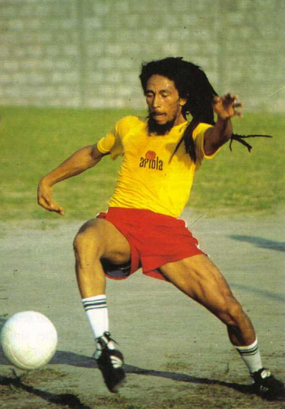
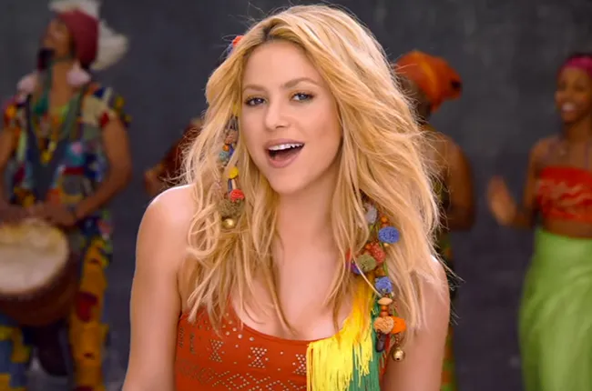
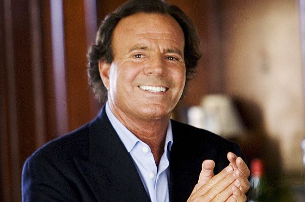
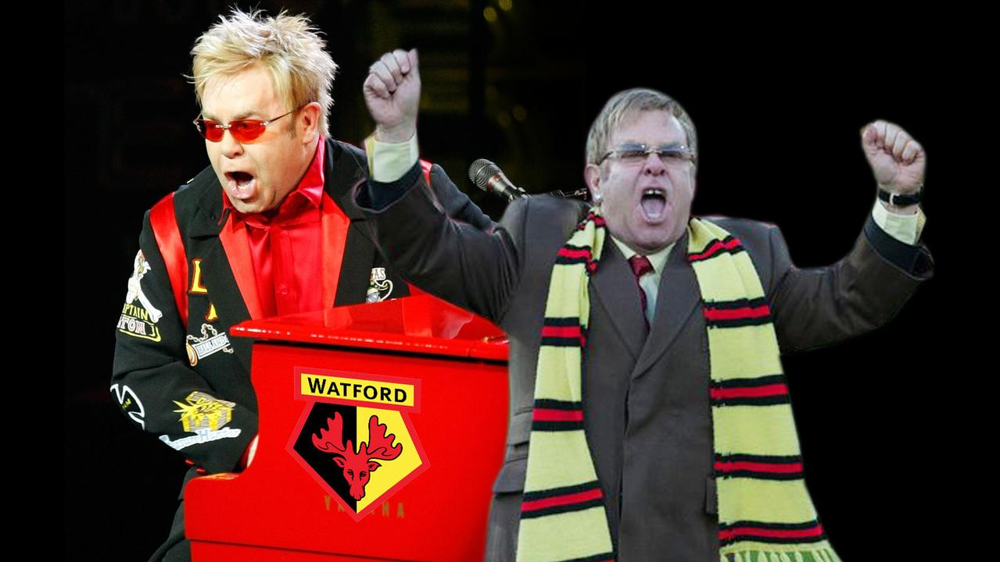

Nietypowe talenty - piłkarze i muzycy
Piłkarze, którzy tworzą muzykę
Memphis Depay
- Holenderski napastnik, raper
- Tworzy pod pseudonimem Memphis, jego teledyski mają miliony wyświetleń
- Styl: trap / hip-hop
Clint Dempsey
- Amerykański napastnik, grał m.in. w Premier League
- Raper o pseudonimie Deuce
- Występował w klipie „Don't Tread” razem z Big Hawk
- Styl: hip-hop z wpływami południowego rapu
Kevin-Prince Boateng
- Znany z klubów Serie A i Bundesligi
- Nagrał trapowy kawałek pod tytułem „King” w 2018 roku
- W klipie występuje z tatuażami, drogimi samochodami – klasyczny rapowy styl
Jesé Rodríguez (Jey M)
- Były zawodnik Realu Madryt i PSG
- Tworzy muzykę reggaeton pod pseudonimem Jey M
- Współpracował z artystami takimi jak Alexis & Fido, De La Ghetto
Gaël Clichy
- Francuski obrońca znany z gry w Arsenalu i Manchesterze City
- Amatorsko tworzy muzykę elektroniczną i hip-hop
- Gra na klawiszach i komponuje bity
Muzycy, którzy mogli zostać piłkarzami
Bob Marley
- Grał codziennie, był zakochany w piłce
- Grał na pozycji napastnika

Shakira
- Gwiazda popu, była świetną piłkarką jako nastolatka
- Na boisku grała na środku pomocy
- Wielka fanka piłki – nagrała hymn Mistrzostw Świata („Waka Waka”) i była związana z Gerardem Piqué

Andrea Bocelli
- Światowej sławy tenor
- W młodości był bramkarzem, zanim stracił wzrok
- Nadal kocha futbol i śpiewał na wielu imprezach piłkarskich
Julio Iglesias
- Jeden z najbardziej znanych latynoskich wokalistów
- Były bramkarz rezerw Realu Madryt
- Po wypadku samochodowym porzucił piłkę na rzecz muzyki

Elton John
- Choć nie był piłkarzem, był właścicielem klubu Watford F.C.
- Grał amatorsko i angażował się w rozwój klubu
- Futbol był jego wielką pasją obok muzyki
